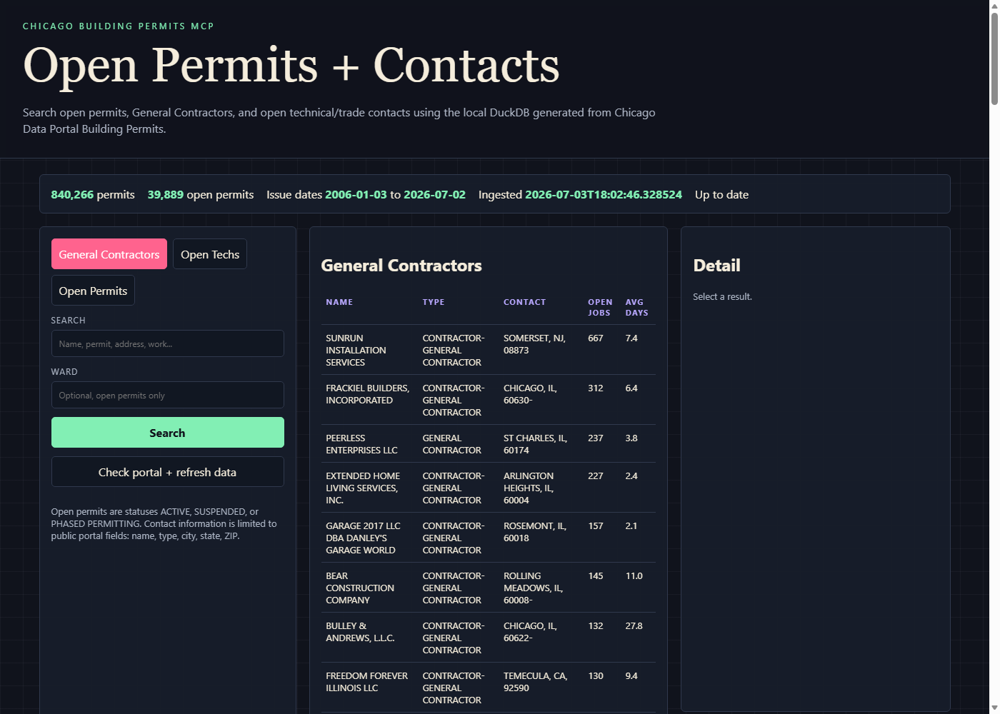

What This Tool Does
Run The Live Search App Locally
GitHub Pages is static, so the hosted site cannot run the Python MCP server or DuckDB database directly. The live tool runs on your machine and keeps itself current by checking Chicago Data Portal metadata.
uv sync
uv run chi-permits init
uv run chi-permits-webThen open http://127.0.0.1:8765.
The local database is intentionally excluded from GitHub. Rebuild or refresh it from the public API with uv run chi-permits init or the web app refresh control.

MCP Tools Included
The server exposes permit-aware MCP functions for lookup, trends, rankings, contact profiles, and read-only SQL.
- dataset_info
- permit_lookup
- recent_permits
- permit_breakdown
- permit_trends
- top_permits
- open_permits
- general_contractors
- open_techs
- contact_detail
- run_sql
Freshness Model
The web app checks the Chicago Data Portal's dataset metadata through /api/status. When the portal has newer rows than the local DuckDB snapshot, the app starts a background ingest. You can also refresh manually from the interface.
Contact information is limited to public fields available in the source dataset: contact type, name, city, state, and ZIP code. Phone and email fields are not present in the source.